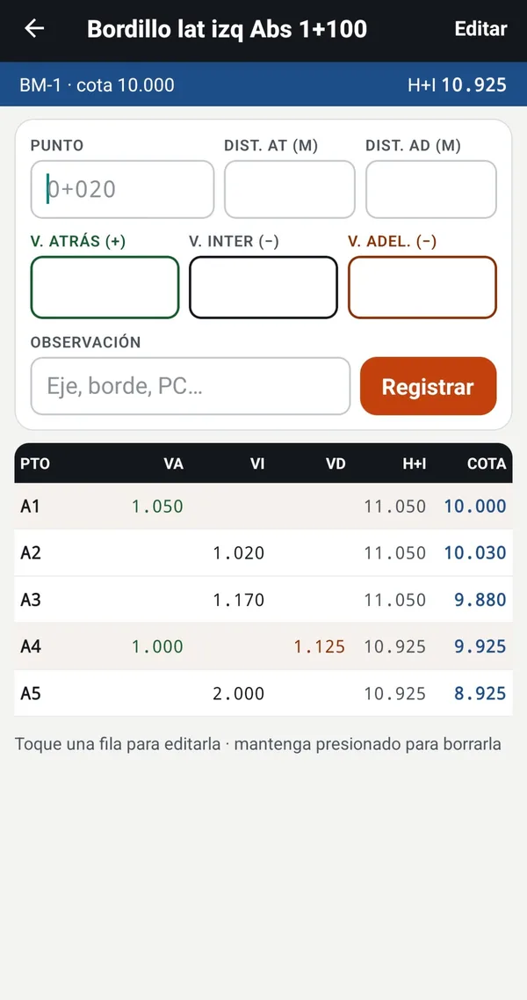
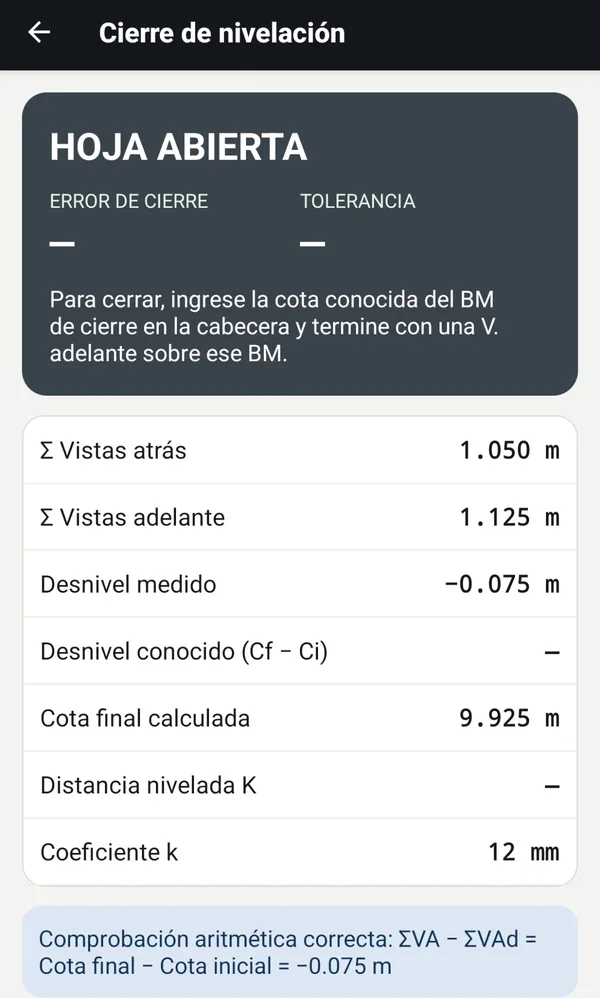

La libreta de nivelación en su teléfono
Registre las lecturas en campo y obtenga H+I, cotas y el cierre al instante. Controle la tubería de alcantarillado y los bordillos contra el diseño, y entregue la libreta en PDF o Excel.


Hecha para el trabajo de obra
Desarrollada por un ingeniero civil residente de obra, a partir de la libreta que usa en instalación de alcantarillado y control de bordillos.
Nivelación geométrica
Vista atrás, intermedia y adelante. H+I y cotas calculadas en cada fila, con puntos de cambio.
Cierre y tolerancia
Error de cierre y tolerancia T = k·√K (k = 12 mm por defecto). Comprobación aritmética automática.
Control de tubería
Cargue las cotas de los pozos, y la app compara la batea instalada con el diseño y dice cuánto subir o bajar.
Bordillos y pendientes
Pendiente real contra la de diseño, contrapendientes y puntos bajos donde se empoza el agua.
PDF y Excel
Libreta en PDF A4 con cierre y firma del topógrafo, y Excel con valores numéricos. Compártalos por WhatsApp, Drive o correo.
Sin internet y con respaldo
Todo queda en el teléfono. Cree un archivo de respaldo y restáurelo en otro equipo.
Así se ve
Capturas tomadas en un teléfono con la versión de prueba.
Instalación
Toma menos de un minuto.
Teléfono o tablet Android
- Toque Descargar para Android desde el teléfono.
- Abra el archivo descargado. Si Android lo pide, permita instalar apps desde el navegador.
- Si aparece el aviso de Play Protect, elija Instalar de todos modos.
- Abra GeoNivel Pro y cree su primer proyecto.
Actualizar
- Descargue la versión nueva desde esta página.
- Instálela encima de la anterior: sus proyectos y lecturas se conservan.
- Antes de cambiar de teléfono, cree un respaldo desde Proyectos › Respaldo.
Preguntas frecuentes
¿Necesita internet?
No. Toda la libreta, los cálculos y los archivos se hacen en el teléfono, también en obra sin señal.
¿Cómo calcula las cotas?
Por altura instrumental: H+I = cota + vista atrás, y cota = H+I − vista intermedia o adelante. El cálculo se hace en milímetros enteros para no acumular errores de redondeo.
¿Qué tolerancias usa?
Para el cierre de nivelación, T = 12·√K mm. Para el control contra diseño, ±10 mm en tubería y ±6 mm en bordillos. Todas se pueden cambiar en cada hoja según lo que pida el pliego o la fiscalización.
¿Cómo nombro los puntos para comparar con el diseño?
Con su abscisa, por ejemplo 0+020 o 1+100. La app interpola la cota de proyecto entre los pozos o puntos de diseño que usted cargue.
¿Dónde quedan mis datos?
Solo en su teléfono. El desarrollador no recibe nada. Lea la política de privacidad.
¿Cuándo llega a Google Play?
Pronto. Esta versión de prueba sirve para recoger comentarios de uso en obra antes de publicarla en la tienda.
¿Es seguro instalar el APK?
Se publica solo en esta página. No pide permisos de contactos, cámara ni ubicación.
GeoNivel Pro es una herramienta de apoyo al cálculo. Los resultados dependen de las lecturas registradas; el profesional responsable debe verificarlos antes de usarlos en obra.